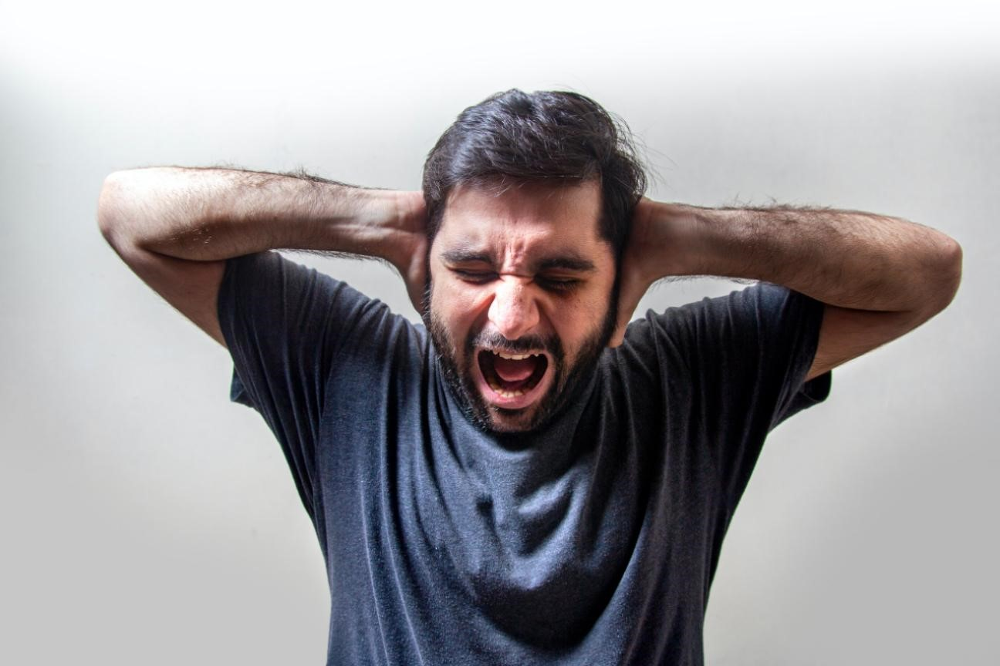

Anxiety does not come from thinking about the future but occurs from the thought of controlling it. Tempers are frayed and it is just an alarming response to what awaits you in the future. Experts call it an instinctive reaction to stress, which is something similar to people’s first job interview. One must be aware that if anxiety condition persists for a very long time, say around six months, then it'll be termed as an anxiety disorder in medical terms, which is very dangerous for an individual's well-being.
That shifts the focus back to the thought, is anxiety bad? not really. The thought of taking huge responsibilities may seem irksome to begin with, but it drives you to work harder and finer. The feeling of constant fear can be lethal and weakening which may stop you from indulging in activities that you love, the worst-case scenario being the fear of not leaving home. Anxiety disorders are closely related to emotional disorders which are commonly seen in people of all ages. The American Psychiatric Association in their report mentioned that women are more likely to be suffering from anxiety disorders than men. A few important anxiety disorders are :
We routinely contemplate what causes anxiety disorders, but the researchers are still not aware of the exact cause, but what they are certain about is, it has something to do with genetic, environmental factors, and brain chemistry. Common symptoms include dry mouth, sweating, fear, distress, numbness to name a few. One thing that makes anxiety disorders dangerous is that diagnosis of this disorder is an extensive process that includes physical, mental, and psychological tests. The doctors use several parameters to assess the level of anxiety. Now we can interpret and explore the course of options if a person is diagnosed with anxiety. In most cases, medical treatment can be avoided and a few changes in the style of living would suffice to tackle the disorder, but in extreme cases, medical interventions seem necessary. Regular appointments with your therapist or psychologist can help you overcome the inevitable.
Nature itself is the best physician and natural caretaker of the body. Meditation, healthy eating habits, avoiding alcohol- cigarettes, getting enough sleep will help you get rid of anxiety issues. Anxiety attacks can be an outcome of vital depression, which can be fatal in children and teens. Uncontrolled anxiety in teens may lead to them taking extreme steps.
Stress and anxieties fall under the same umbrella which arises because of the demands of the brain and the body. As discussed before neither of them are bad, it is like a motivation which one should not expect to persevere for long. People think alcohol and drugs can help you settle your nerves, but less they know that it can unsettle the routine of the brain, which is far more dangerous. Why dive into another problem to solve one? After all, anxieties can be managed and treated.